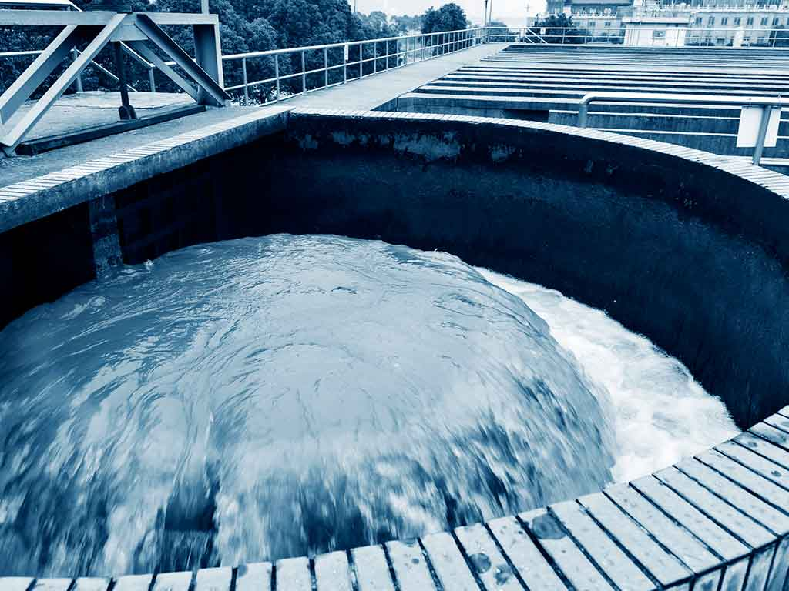

Nuestros Servicios
Ofrecemos soluciones, servicios sostenibles y eficientes y socialmente responsables con el ambiente, ara reducir el consumo de recursos naturales y el diseño de productos que sean reciclables o biodegradables.


En VAETTIR creamos soluciones innovadoras y sostenibles que mejoren la calidad de vida de empresas y personas miniminzando el impacto hacia el medio ambiente
Consolidarnos como una de las mejores empresas líderes en creación de soluciones innovadoras que impulsen la sostenibilidad y la automatizacón en diferentes sectores de la sociedad.
Ofrecemos soluciones, servicios sostenibles y eficientes y socialmente responsables con el ambiente, ara reducir el consumo de recursos naturales y el diseño de productos que sean reciclables o biodegradables.
En VAETTIR nos caracterizamos por nuestra atención al cliente ya que es nuestra máxima prioridad , nos esforzamos día a día para darles un servicio excepcional y personalizado por nuestro personal altamente capacitado y estar a la vanguardia de las últimas tendencias y tecnologías para ofrecerte los productos de última generacion y responsabilidad con el ambiente reduciendo el impacto ambiental, Al elegirnos, no solo obtendrás productos/servicios de calidad , si no que tambíen apoyas iniciativas responsables y comprometidas con un futuro más sostenible.

Los avances en la tecnología de membranas no sólo han reducido los riesgos de salud y medioambiente asociados a las aguas residuales, sino que también han abierto nuevas vías como la reutilización potable. El uso de tecnologías de membrana (ósmosis inversa, microfiltración, ultrafiltración, etc.) es cada vez más común para el tratamiento terciario o avanzado, especialmente en los países desarrollados. Además, a medida que las membranas continúan mejorando y los costos operacionales disminuyen.
Esta innovación tecnológica, basada en procesos bio-electroquímicos, se comenzó a aplicar en el tratamiento de aguas residuales durante esta última década, con el fin de producir energía (corriente eléctrica) mediante la utilización de la digestión anaeróbica, la cual imita las interacciones bacterianas que se encuentran en la naturaleza. Esta tecnología puede reducir significativamente los costos del proceso de tratamiento y la cantidad de fangos sobrantes. Sin embargo, teniendo en cuenta los retos que plantea su aplicación práctica, se necesitan mejoras para superar las altas necesidades energéticas.
Han resultado exitosos debido a la alta eficiencia y bajos costos de inversión y operación. Ejemplos incluyen procesos innovadores para eliminación de nitrógeno mejorado tal como SHARON® (sistema de un solo reactor para la eliminación biológica de nitrógeno vía nitrito), ANAMMOX® (oxidación anaerobia de amonio) y BABE® (potenciación de organismos nitrificantes), así como procesos de cristalización mineral para la recuperación y reutilización del fósforo. Los procesos de tratamiento de los fangos granulares también están surgiendo mediante el uso de estructuras microbianas de ingeniería. El primer fango granular se comercializa bajo el nombre de NEREDA